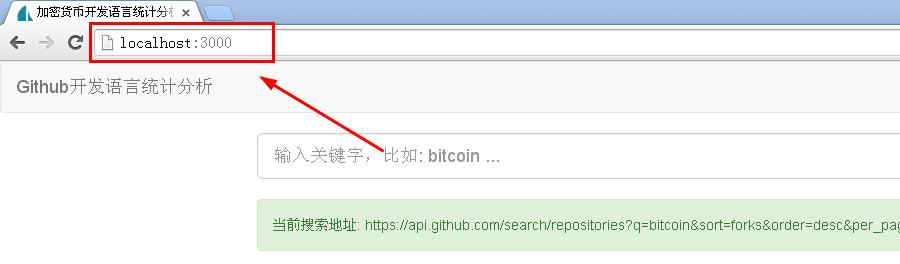

Nodejs让后台开发像前端一样简单
题外话
最近一直在关注比特币社区的大事件，Mike Hearn说比特币实验失败了，比特币交易价格应声大跌，币圈的朋友该如何站队，比特币的未来会如何，很多人又一次陷入迷茫。
我个人，反而更加坚定了信心。这件事充分说明，一个产品有它的生命周期，有它失败的风险，一项技术却永远前进在路上。无论产品消亡与否（当然，比特币不会那么轻易消亡），都会留下丰厚的技术遗产。
希望我的技术分享，能为这句话做个见证。
前言
上一篇文章，简单介绍了Nodejs，搭建了开发环境，并轻松完成了前端开发。本文，我们更进一步，看看如何实现更加复杂的业务逻辑，如何构建自己的Api。
为什么要用后台？就我们这个统计分析项目(Sacdl项目）而言，仅前台几个文件已经足够。但是，多数项目业务更加复杂，没有后台办不成事。
另外，前端处理能力有限，特别是web应用，前端代码越简单越好，对于性能和用户体验都有好处。反观我们的Sacdl项目，显然对于数据的整理更适合在后台处理。
再者，大家知道，Bitcoin或其他竞争币的核心，通常会提供Json格式的Api，我们只要在后台对这些Api进行操作，实现自己的业务逻辑，就能很轻松实现区块链浏览器(如：blockchain.info）、钱包、支付等基本应用。因此，直接学习如何处理第三方Api，对于我们快速上手基于区块链开发应用，是有直接帮助的。
需求
明确要干什么，很重要。
- 从后台读取github.com的Api;
- 处理读取的数据，并发送给前端;
很明显，我们需要重构前端代码。
开发
下文仍以Sacdl工程为例，引入Express框架，并以此为基础进行开发重构。
基于Nodejs的开发框架很多，而Express是最基础、最出众的一个，很多其他的框架都是基于它构建的，比如严格模仿ruby on rails的sails框架等。
（1）安装Express
cnpm install express --save
说明：安装 Nodejs 模块时，如果指定了 --save 参数，那么此模块将被添加到 package.json 文件中的 dependencies 依赖列表中。以后，就可以通过 npm install 命令自动安装依赖列表中所列出的所有模块。
（2）创建简单应用
进入工程目录，新建文件 app.js，输入如下内容：
var express = require('express');
var app = express();
app.get('/', function (req, res) {
res.send('Hello World!');
});
var server = app.listen(3000, function () {
var host = server.address().address;
var port = server.address().port;
console.log('Example app listening at http://%s:%s', host, port);
});
然后，运行下面的命令：
$ node app.js
最后，用浏览器打开 http://localhost:3000/ ，可以看到 hello world!输出。
这官网的例子，是一个完整的web应用。也可以理解为一个服务器软件，不过是仅仅在3000端口，提供了一个简单的web服务。
如果，你对上篇gulp的管道概念有了一定认识，你也可以想象成，我们已经搭建了一条从后台到前端的管道。剩下的工作，就是给这条管道添加各种处理装置，让水流（数据流）实现我们的要求。关于流的概念，我们会在下一篇再次总结一下。
（3）使用模板引擎
上面，我们直接将hello world发送给了浏览器，如果是html文件该怎么做呢？Nodejs没有直接渲染模板的功能，需要用到第三方插件，如:jade,ejs,hbs等
这里，咱们用ejs，它就像java的jsp，rails的rhtml，直接在html文件里嵌入代码，简单好用。下面，安装它：
$ cnpm install ejs --save
然后，用app.set设置我们的第一个管道过滤器，修改上述代码如下：
-------其他-------
app.set('views', './views')
app.set('view engine', 'ejs')
app.get('/', function (req, res) {
res.render('index');
});
-------其他-------
我们新建views文件夹（把视图文件暂时放在这里），在views里新建index.ejs，打开它，把hello imfly!拷贝过去。
重启服务器（ctrl + C关闭，然后再用node app命令打开），刷新浏览器，看到变化，证明模板启用成功。
（4）使用静态文件服务
我们的前端，只有public/index.html文件。现在，将它的代码复制到views/index.ejs文件里，并修改js，css引用。重启，刷新，啊，一堆乱码，按下F12，打开浏览器控制台，看到一堆404错误，我们的js，css文件都没有成功加载，怎么回事？
到目前为止，我们仅提供了/地址下的路由请求，其他任何地址，Nodejs都默认转向404错误。怎么办？一个个添加吗，显然不是，这类静态文件，express提供了简单的方法：
app.use(express.static('./public', {
maxAge: '0', //no cache
etag: true
}));
app.get('/', function (req, res) {
...
这是咱们使用的第二个管道过滤器，上面的代码意思是，在public下的文件，包括js,css,images，fonts等都当作静态文件处理，根路径是./public,请求地址就相对于/，比如：./public/js/app.js文件，请求地址就是http://localhost:3000/js/app.js
说明：这里有一个小问题，使用bower安装的前端第三方开发包，都在bower_components文件夹下，需要移到public文件夹里。同时需要添加一个.bowerrc文件，告诉bower组件安装目录改变了，并修改gulpfile.js文件。当然也可以连同bower.json文件都拷贝到public文件夹里。
重启服务，刷新页面，我们看到了久违的页面。

（5）后台请求githubApi
在后台请求github也有很多方案，使用Nodejs的request插件，就可以直接在后端请求http地址，相当于直接把前端代码拿到了后台。不过，这里有个更好的方案，github提供了Nodejs使用的开发包，我们可以直接用：
cnpm install github --save
官方地址：https://github.com/mikedeboer/node-github
为什么会想到这个方案？一个方法是，认真阅读官方文档，看它提供了什么资源;另一方法是，京城去https://npmjs.com上搜搜。通常，成熟的产品，一般都会提供现成的方案。
该组件集成了githubApi的几乎全部内容，当然包括搜索功能。下面，让我们试试，把下面的代码拷贝到app.js：
var GitHubApi = require("github");
//下面的代码放在app.get('/', ...)之前
app.get('/search', function(req, res){
var msg = {
q: 'bitcoin',
sort: 'forks',
order: 'desc',
per_page: 100
}
github.search.repos(msg, function(err, data) { //这里必须用`回调`函数，不能使用 var data = ...的方式，下篇细说
res.json(data); //输出json格式的数据
})
})
在浏览器里请求 http://localhost:3000/search, 可以看到与请求https://api.github.com/search/repositories?q=bitcoin&sort=forks&order=desc&per_page=100 一样的结果（样式可能不同）
http://localhost:3000/search 就是我们自己的Api服务，如果有自己的数据库或其他逻辑业务，数据很容易融合进去。
让前端请求这个api，修改public/js/app.js 34行的代码，如下：
url = url || 'http://localhost:3000/search'; //默认请求的页面
在浏览器里请求 http://localhost:3000/，结果与原来相同。这样我们就简单实现了，后台处理数据，前台展示数据。
（6）模块化重构
到目前为止，我们都是在修改app.js，不断往里面添加各种管道过滤器。如果业务复杂，这个文件会非常大。事实上，任何一个Nodejs应用，都可以压缩成这样一个js文件。这就能轻松理解，为什么多数js框架都习惯带着js后缀了吧，因为它本身就是一个js文件。
但，这样不适合开发和维护。我们需要把它分解成一个个独立的文件，通过名字就能分辨它的用处，通过名字就能直接用它，这就是Nodejs的模块化开发。
Nodejs的模块化非常简单。记住这样一个简单的逻辑关系：通常一个module.exports可以定义一个模块;一个文件只包含一个模块;只要是模块就可以使用require()方法在其他地方引用。样式与我们的前端代码非常相似，如下：
//文件 /path/to/moduleName.js
//局部变量
var a = ''
//公共方法（直接导出模块）
var moduleName = {} 或 function(){} //总之就是一个对象
//私有方法
function fun1(){}
//导出模块
module.exports = moduleName;
在其他文件中，我们可以这样用：
var moduleName = require('/path/to/moduleName'); //默认js后缀，习惯不用带
//然后，直接调用moduleName的各对象或方法就是了
按这个方式，我们把app.js文件，拆分成典型的MVC的开发样式，比如，熟悉ruby on rails的朋友，都习惯把代码分开保存在controllers,models和views文件夹里，以及router文件，这里，我们仿效之。视图已经定义在了views文件夹下，下面我们重点拆分其他的。
a）拆分模型
模型model专门处理数据，无论是数据库，还是请求远程api资源，都应该是它的事。自然，我们可以把githubApi的请求独立出来，这么做：
新建文件夹和文件 app/models/repo.js,剪切粘贴下面的代码
var GitHubApi = require("github");
/**
* from https://www.npmjs.com/package/github
* @type {GitHubApi}
*/
var github = new GitHubApi({
// required
version: "3.0.0",
// optional
debug: false,
protocol: "https",
host: "api.github.com", // should be api.github.com for GitHub
pathPrefix: "", // for some GHEs; none for GitHub
timeout: 5000,
headers: {
"user-agent": "My-Cool-GitHub-App" // GitHub is happy with a unique user agent
}
});
var Repo = {
search: function(msg, callback) {
var msg = msg || {
q: 'bitcoin',
sort: 'forks',
order: 'desc',
per_page: 100
}
github.search.repos(msg, callback);
}
}
module.exports = Repo;
说明：模型Model是资源的集合，就像数据库里的一张表，名字自然用资源类的名词表示最好。对数据的增删改查都在模型里，自然在前端public/js/utils.js里的部分代码就应该转移到这里，从而直接输出treemap的数据格式，例如：
// from /public/js/utils.js
function treeData(data) {
var languages = {};
var result = {
"name": "languages",
"children": []
}
...
b）拆分控制器
控制器负责从模型请求数据，并把数据发送到前端，是前端和后台的调度员。这里，app.get方法里的匿名函数便是，我们分别把他们抽取出来，放在app/controllers/repos.js里，并把请求githubApi的代码用模型代替，代码如下：
var Repo = require('../models/repo');
var Repos = {
//get '/'
index: function(req, res) {
res.render('index');
},
//get '/search'
search: function(req, res) {
Repo.search(req.query.query, function(err, data) {
res.json(data);
})
}
}
module.exports = Repos;
说明：按照惯例，控制器的名称，通常是对应模型的名称（名词）的复数;行为的名称，通常是动作（动词），因此repos.index就表示版本库列表，repos.search就是搜索版本库信息，在app.js中，自然这样调用：
----其他代码----
var repos = require('./app/controllers/repos');
app.get('/search', repos.search);
app.get('/', repos.index);
----其他代码----
这部分代码，起到分发路由的作用，一看便知应该在路由里，于是继续重构。
c）拆分路由
新建文件app/router.js, 把上面的代码剪切过来，修改为：
var repos = require('./controllers/repos');
var Router = function(app) {
app.get('/search', repos.search);
app.get('/', repos.index);
}
module.exports = Router;
在app.js里，简单调用:
var router = require('./app/router');
router(app);
以后，再添加其他的任何路由，只要修改router.js就是了。
d）整理视图
把views整体移动到app/views下，并修改app.js代码，让模板引擎指向该文件夹
app.set('views', './app/views')
然后，新建app/views/repos文件夹，将views/index.ejs文件移入。
说明：视图view是界面元素，通常是类html文件，按照惯例，它的文件夹与控制器同名repos，各文件名与控制器的行为action同名，如index -> index.ejs
当然，视图根据模板引擎的特点，也可以进行模块化处理，进一步细化为layout.ejs, header.ejs等，方便重复使用。限于篇幅，不再罗嗦。详情，请看源码。
经过这样的模块化整理，我们轻松实现了一个简单的MVC框架（如图），它的易用性、扩展性得到很大提升。我们已经可以快速添加更多的功能了，比如：像巴比特那样显示主流交易市场信息（下篇）。

（7）测试（略）
无测试不产品。不过咱们还是省了吧，不然，又要很长的篇幅。本项目仅作文章辅助，不能作为产品使用。如果非要用，建议您写写测试，不然后果自负。
说到这的时候，本人就有一个问题没有解决：我的办公室有代理，通过Nodejs请求api.github.com是不成功的，但在家里就可以。这个问题，就留给高手去解决吧。
我们的方向是文章，每个细节都想完美，最终的结果就会不完美。很多程序员在某个时期，会不自觉的陷入技术细节，而忽略很多重要的东西。最严重的是，很多人始终都没有拿出过一个完整的产品，像样的更不用说了。“使劲看就是盲，太专注就是愚”，值得深思。
（8）部署（略）
自己找个服务器，折腾折腾吧。
总结
本文涉及的代码非常简单，但在严格控制字数的情况下，仍然罗嗦了这么多。所以，很多时候，语言的力量非常苍白，说这么多干嘛，做就是了。
文中，对输入框的处理没有说明，请自己查看源码（写到这个时候，其实还没有做）。模块化部分，其实已经有一个叫express-generator的插件，可以一键生成，所以很多优秀的资源，自己去探索吧。不过窃以为，该说的重点基本提到。
总体来说，使用Nodejs，从前端到后台并不复杂，或者说非常简单。前后语言的统一，给我们减少了很多思维转换的麻烦。如果你能完整实践这两篇文章，我个人认为，Nodejs应该可以入门了。
但是，要想看明白一些复杂的代码，还需要掌握Nodejs的一些独特习惯，比如回调，比如对异常的处理等等，请看下一篇：《Nodejs开发加密货币》之四：您必须知道的几个Nodejs编码习惯，仍以sacdl项目为例，添加展示主流交易市场信息等功能，目标是简单介绍一些大家经常遇到的坑，以便在接下来的代码分析中更加轻松。
链接
项目源码: https://github.com/imfly/sacdl-project
试用地址：https://imfly.github.io/sacdl-project （前端）
本文源地址： https://github.com/imfly/bitcoin-on-nodejs
电子书阅读： http://book.btcnodejs.com/
参考
Expressjs官网： http://expressjs.com/